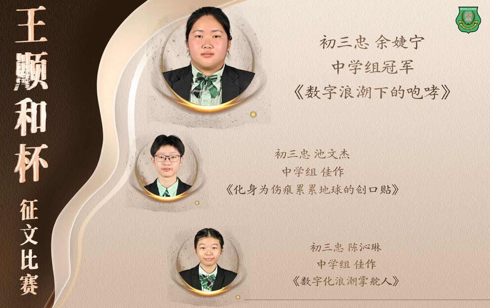
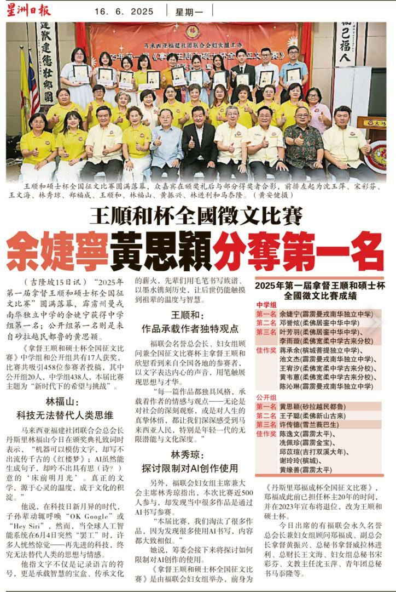
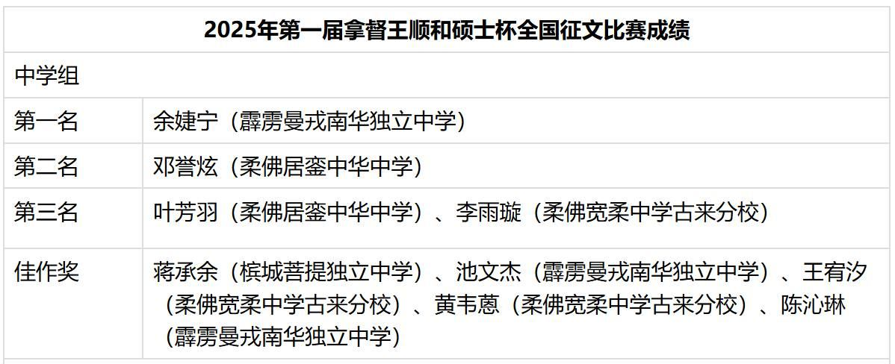

南华独中学生勇夺“王顺和杯”全国征文赛佳绩
南华独中学生勇夺“王顺和杯”全国征文赛佳绩
以文字思辨，书写青年之声，聚焦时代浪潮
在第十三届“王顺和杯”全国征文比赛中，南华独中三位初三忠班学生表现亮眼，脱颖而出，于中学组中分别夺得冠军与佳作荣誉，为校争光。
本届比赛主题为“新时代下的希望与挑战”，吸引全国各地中学生参与。南华独中余婕宁同学凭着《数字浪潮下的咆哮》一文，勇夺中学组冠军；池文杰同学以《化身为伤痕累累地球的创口贴》、陈沁琳同学则以《数字化浪潮掌舵人》，双双荣获佳作奖项。
校长陈丽冰博士表示，从学生们的作品中展现出“有感而发、夹叙夹议，直抒胸臆”的强烈写作动机。“从字里行间，可以读见了他们对这个时代的观察与体会。孩子们不仅书写当下，更在思索未来，这正是教育所期许的思辨素养。”陈校长感谢中文科指导老师林子策的用心指导，从写作中引导学生去读世界、思辨变化，让学生作品充满思想张力。
电子报链接：


